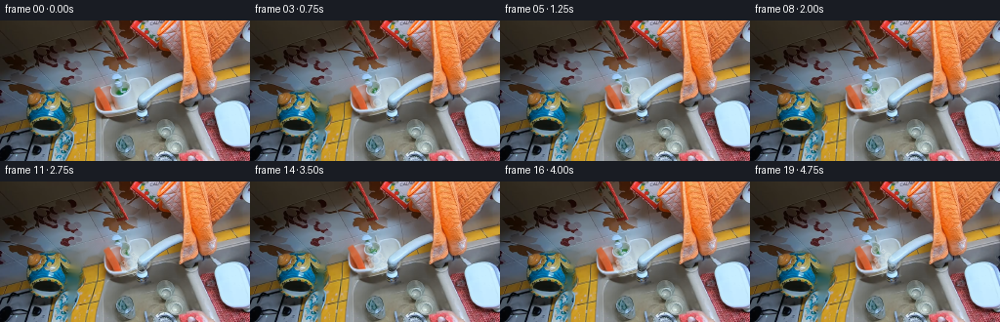
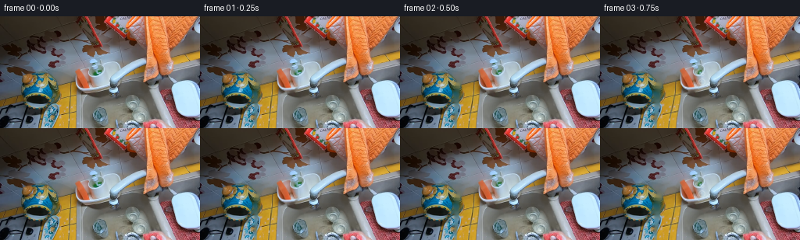

CODING AGENTS AS PIXEL WORLD MODELS
traex/GPT-5.6-Sol · common50_0027
点击播放 · 原生 RGB 像素
逐轮保存的候选
回放视频、检查图与代码变化。
每份候选均可单独播放。实际图片检查记录在下方工具轨迹中。
候选 01播放与检查图
点击播放 · 原生 RGB 像素


展开代码变化
--- 上一保存版本
+++ 本次保存版本
@@ -0,0 +1,153 @@
+"""Deterministic pixel animation for the requested egocentric washing action.
+
+The supplied frame is treated as the photograph/texture source. A soft articulated
+cut-out of the visible forearm, hand, and sponge is displaced over a numerically
+reconstructed patch of sink. Small wet highlights and soap bubbles make the
+contact with the glass readable while retaining the source photograph's look.
+"""
+from pathlib import Path
+import math
+import cv2
+import numpy as np
+from PIL import Image
+import artifact_io
+
+ROOT = Path(__file__).resolve().parent
+W, H = 256, 144
+
+
+def soft_mask_from_polygon(points, feather=2.0):
+ hard = np.zeros((H, W), np.uint8)
+ cv2.fillPoly(hard, [np.asarray(points, np.int32)], 255, lineType=cv2.LINE_AA)
+ # Preserve a solid photographic interior and only soften the silhouette edge.
+ if feather:
+ soft = cv2.GaussianBlur(hard, (0, 0), feather * 0.55)
+ soft[hard == 255] = 255
+ return soft
+ return hard
+
+
+def alpha_over(base, layer, alpha):
+ a = alpha.astype(np.float32)[..., None] / 255.0
+ return np.clip(base.astype(np.float32) * (1.0-a) + layer.astype(np.float32) * a,
+ 0, 255).astype(np.uint8)
+
+
+def warp_articulated(image, alpha, dx, dy):
+ """Move the fingers fully, tapering smoothly to a fixed wrist at frame bottom."""
+ yy, xx = np.mgrid[0:H, 0:W].astype(np.float32)
+ # Full movement above the knuckles, smoothly diminishing down the forearm.
+ bend = np.clip((H - yy) / 52.0, 0.0, 1.0)
+ bend = bend * bend * (3.0 - 2.0 * bend)
+ mapx = xx - dx * bend
+ mapy = yy - dy * bend
+ moved_rgb = cv2.remap(image, mapx, mapy, cv2.INTER_CUBIC,
+ borderMode=cv2.BORDER_REFLECT_101)
+ moved_a = cv2.remap(alpha, mapx, mapy, cv2.INTER_LINEAR,
+ borderMode=cv2.BORDER_CONSTANT, borderValue=0)
+ return moved_rgb, moved_a
+
+
+def add_wet_glass_effects(frame, index, dx, dy):
+ """Subtle bubbles and moving water glints at the sponge/glass contact."""
+ if index < 2:
+ return frame
+ out = frame.copy()
+ # Transparent soap film just beyond the sponge's leading edge.
+ film = np.zeros_like(out)
+ film_a = np.zeros((H, W), np.uint8)
+ progress = min(1.0, (index - 1) / 7.0)
+ cx = int(round(120 + dx))
+ cy = int(round(82 + dy))
+ cv2.ellipse(film_a, (cx + 5, cy + 2), (8, 13), 8, 0, 360,
+ int(16 + 18 * progress), -1, cv2.LINE_AA)
+ film[:] = (210, 232, 235)
+ out = alpha_over(out, film, film_a)
+
+ # Bubbles stay concentrated at the moving contact patch; fixed definitions
+ # avoid temporal sparkle while the small phase offsets make them alive.
+ bubble_defs = [
+ (-2,-9,3,0), (5,-7,2,2), (9,-2,3,4), (4,3,4,1),
+ (10,7,2,3), (0,9,3,5), (13,1,2,6), (-3,1,2,7),
+ (7,12,2,8), (15,8,3,10)
+ ]
+ overlay = np.zeros_like(out)
+ ba = np.zeros((H, W), np.uint8)
+ for j, (ox, oy, r, born) in enumerate(bubble_defs):
+ if index < max(3, born):
+ continue
+ wobble = math.sin(index * 0.55 + j * 1.7)
+ bx = int(round(cx + ox + wobble * 0.65))
+ by = int(round(cy + oy - max(0, index-born) * 0.12))
+ cv2.circle(ba, (bx, by), r, 85, 1, cv2.LINE_AA)
+ if r >= 3:
+ cv2.circle(ba, (bx-1, by-1), 1, 60, -1, cv2.LINE_AA)
+ overlay[:] = (239, 246, 242)
+ out = alpha_over(out, overlay, ba)
+
+ # Thin wet streaks on the transparent glass, built gradually and kept faint.
+ streak = np.zeros_like(out)
+ sa = np.zeros((H, W), np.uint8)
+ for j, sx in enumerate((128, 136, 145, 154)):
+ born = 5 + j * 2
+ if index < born:
+ continue
+ y0 = 73 + (j % 2) * 5
+ length = min(18, 3 + (index-born) * 2)
+ # broken highlight and a tiny droplet at its bottom
+ cv2.line(sa, (sx, y0), (sx-1, y0+length), 27, 1, cv2.LINE_AA)
+ cv2.circle(sa, (sx-1, y0+length), 1, 42, -1, cv2.LINE_AA)
+ streak[:] = (220, 242, 248)
+ return alpha_over(out, streak, sa)
+
+
+def generate():
+ src = np.asarray(Image.open(ROOT / 'first_frame.png').convert('RGB'), dtype=np.uint8)
+ assert src.shape == (H, W, 3)
+
+ # Silhouette follows the red sponge at the top, curled fingers behind it,
+ # then the forearm entering from the lower edge of this egocentric frame.
+ hand_poly = [
+ (96, 66), (110, 66), (118, 70), (122, 78), (123, 88),
+ (118, 94), (105, 97), (100, 101), (99, 144),
+ (73, 144), (73, 112), (72, 98), (75, 86), (80, 78), (91, 75)
+ ]
+ alpha = soft_mask_from_polygon(hand_poly, feather=2.0)
+
+ # Remove only this silhouette to make a clean plate. OpenCV's inpainting is
+ # a local numerical interpolation of pixels from the supplied frame.
+ hole = cv2.dilate((alpha > 10).astype(np.uint8) * 255,
+ cv2.getStructuringElement(cv2.MORPH_ELLIPSE, (5, 5)))
+ clean = cv2.inpaint(src, hole, 7, cv2.INPAINT_TELEA)
+ # Keep the untouched source everywhere outside a very tight neighborhood.
+ near = cv2.GaussianBlur(hole, (0, 0), 1.2)
+ clean = alpha_over(src, clean, near)
+
+ frames = [src.copy()]
+ for i in range(1, 20):
+ # Reach toward the glass for the first 0.75 s, then make short repeated
+ # horizontal scrubbing strokes while maintaining contact.
+ if i <= 3:
+ dx = 2.0 * i
+ dy = -0.45 * i
+ else:
+ phase = 2.0 * math.pi * (i - 3) / 7.0
+ dx = 6.0 + 5.0 * math.sin(phase)
+ dy = -1.4 + 1.45 * math.sin(phase + math.pi / 2.0)
+
+ hand, moved_a = warp_articulated(src, alpha, dx, dy)
+ frame = alpha_over(clean, hand, moved_a)
+ # Effects are placed after the photographic hand so foam gathers along
+ # both the sponge edge and glass surface.
+ frame = add_wet_glass_effects(frame, i, dx, dy)
+ frames.append(frame)
+
+ result = np.stack(frames).astype(np.uint8)
+ # Contract guarantee: no processing is ever allowed to alter frame zero.
+ result[0] = src
+ artifact_io.save(result, ROOT)
+ return result
+
+
+if __name__ == '__main__':
+ generate()
可观测工具轨迹
实际执行的命令与返回图片。
命令 1exit 0
/bin/bash -lc 'cat GENERATION_RULES.md'
命令 2exit 0
/bin/bash -lc "cat prompt.txt && printf '\\n--- files ---\\n' && find . -maxdepth 2 -type f -printf '%p\\n' | sort"
命令 3exit 0
/bin/bash -lc "python3 - <<'PY'
from PIL import Image
im=Image.open('first_frame.png')
print(im.mode, im.size)
import numpy as np
x=np.array(im)
print(x.min(),x.max(),x.mean(axis=(0,1)),x.std(axis=(0,1)))
PY"命令 4exit 0
/bin/bash -lc "cat task_spec.json && sed -n '1,240p' artifact_io.py"
命令 5exit 0
/bin/bash -lc "python3 - <<'PY'
from PIL import Image
import numpy as np
x=np.array(Image.open('first_frame.png'))
h,w=x.shape[:2]
# block mean/std and representative HSV rough
import colorsys
for by in range(0,h,12):
row=[]
for bx in range(0,w,16):
z=x[by:by+12,bx:bx+16]
m=z.mean((0,1)).astype(int)
row.append('%02x%02x%02x'%tuple(m))
print(by, ' '.join(row))
PY"命令 6exit 0
/bin/bash -lc "python3 - <<'PY'
import cv2, numpy as np
x=cv2.imread('first_frame.png'); hsv=cv2.cvtColor(x,cv2.COLOR_BGR2HSV)
# summarize masks color classes and connected comps
classes={
'red':((0,70,45),(12,255,255)), 'red2':((170,70,45),(179,255,255)),
'orange':((8,60,50),(26,255,255)), 'skin':((0,25,65),(25,210,255)),
'blue':((85,25,40),(125,255,255)), 'bright':((0,0,180),(179,90,255)),
'dark':((0,0,0),(179,255,55))}
for name,(a,b) in classes.items():
m=cv2.inRange(hsv,np.array(a),np.array(b))
n,lab,st,cen=cv2.connectedComponentsWithStats(m)
print('\\n',name,'total',np.count_nonzero(m))
for i in sorted(range(1,n), key=lambda i:st[i,4], reverse=True)[:10]:
if st[i,4]>=10: print(st[i].tolist(),np.round(cen[i],1).tolist())
# HSV class map in 8x8 cells classify mean pixels by rules
H,W=hsv.shape[:2]
for yy in range(0,H,8):
s=''
for xx in range(0,W,8):
z=hsv[yy:yy+8,xx:xx+8]; h=np.median(z[:,:,0]); sat=np.median(z[:,:,1]); v=np.median(z[:,:,2])
if v<50:c='K'
elif sat<30 and v>180:c='W'
elif sat<35:c='g'
elif h<8 or h>170:c='R'
elif h<25:c='O'
elif h<40:c='Y'
elif h<85:c='G'
elif h<130:c='B'
elif h<170:c='P'
else:c='?'
s+=c
print(f'{yy:03}',s)
PY"命令 7exit 0
/bin/bash -lc "python3 - <<'PY'
from PIL import Image
import numpy as np
x=np.array(Image.open('first_frame.png'))
# quantize pixels to nearest named RGB then majority per 4x4; print 64x36
colors={'k':(25,22,18),'d':(55,45,40),'s':(190,130,100),'o':(220,110,50),'r':(155,55,50),'b':(95,125,145),'c':(180,220,235),'w':(220,225,220),'g':(110,110,105),'y':(160,135,55),'v':(115,80,100)}
cs=np.array(list(colors.values())); names=list(colors)
for yy in range(0,144,4):
line=''
for xx in range(0,256,4):
p=np.median(x[yy:yy+4,xx:xx+4],axis=(0,1))
# weighted chroma distance
dist=((cs-p)**2).sum(1)
line+=names[np.argmin(dist)]
print(line)
PY"命令 8exit 0
/bin/bash -lc "python3 - <<'PY'
import cv2,numpy as np
x=cv2.imread('first_frame.png')[:,:,::-1]; h=cv2.cvtColor(x,cv2.COLOR_RGB2HSV)
# each 4x4 median within x52..148 y60..144, report HSV compressed using hue and sat/value symbols maybe
for yy in range(56,144,4):
print('\\ny',yy)
for xx in range(48,152,4):
z=x[yy:yy+4,xx:xx+4]; p=np.median(z,axis=(0,1)).astype(int)
H,S,V=cv2.cvtColor(np.uint8([[p]]),cv2.COLOR_RGB2HSV)[0,0]
if V<45:c='K'
elif S<25:c='.'
elif H<7 or H>172:c='R'
elif H<15:c='r'
elif H<28:c='O'
elif H<40:c='Y'
elif H<85:c='G'
elif H<130:c='B'
else:c='P'
print(c,end='')
print()
# notable patch stats grid of means
for box in [(90,60,130,100),(60,75,110,144),(95,45,190,100),(0,45,95,144)]:
x1,y1,x2,y2=box;z=x[y1:y2,x1:x2]
print(box,'mean',z.mean((0,1)),'minmax',z.min((0,1)),z.max((0,1)))
PY"命令 9exit 0
/bin/bash -lc "python3 - <<'PY'
import cv2,numpy as np
x=cv2.imread('first_frame.png')
g=cv2.cvtColor(x,cv2.COLOR_BGR2GRAY)
e=cv2.Canny(g,60,130)
# print edges for whole at 4x4 any edge threshold
for yy in range(0,144,4):
s=''
for xx in range(0,256,4):
n=np.count_nonzero(e[yy:yy+4,xx:xx+4])
s += 'â' if n>6 else 'â' if n>3 else 'â' if n>1 else 'â' if n else ' '
print(s)
PY"命令 10exit 0
/bin/bash -lc "python3 - <<'PY'
import cv2,numpy as np
b=cv2.imread('first_frame.png');h=cv2.cvtColor(b,cv2.COLOR_BGR2HSV)
m=cv2.inRange(h,np.array((0,25,65)),np.array((25,210,255)))
# print extents skin mask ROI per y; all runs >=2
for y in range(55,144,3):
row=m[y]; runs=[]; on=np.flatnonzero(row)
if on.size:
sp=np.split(on,np.where(np.diff(on)>1)[0]+1)
runs=[(q[0],q[-1]) for q in sp if len(q)>1]
print(y,runs)
PY"命令 11exit 0
/bin/bash -lc "cat > generate.py <<'PY'
\"\"\"Deterministic pixel animation for the requested egocentric washing action.
The supplied frame is treated as the photograph/texture source. A soft articulated
cut-out of the visible forearm, hand, and sponge is displaced over a numerically
reconstructed patch of sink. Small wet highlights and soap bubbles make the
contact with the glass readable while retaining the source photograph's look.
\"\"\"
from pathlib import Path
import math
import cv2
import numpy as np
from PIL import Image
import artifact_io
ROOT = Path(__file__).resolve().parent
W, H = 256, 144
def soft_mask_from_polygon(points, feather=2.0):
hard = np.zeros((H, W), np.uint8)
cv2.fillPoly(hard, [np.asarray(points, np.int32)], 255, lineType=cv2.LINE_AA)
# Preserve a solid photographic interior and only soften the silhouette edge.
if feather:
soft = cv2.GaussianBlur(hard, (0, 0), feather * 0.55)
soft[hard == 255] = 255
return soft
return hard
def alpha_over(base, layer, alpha):
a = alpha.astype(np.float32)[..., None] / 255.0
return np.clip(base.astype(np.float32) * (1.0-a) + layer.astype(np.float32) * a,
0, 255).astype(np.uint8)
def warp_articulated(image, alpha, dx, dy):
\"\"\"Move the fingers fully, tapering smoothly to a fixed wrist at frame bottom.\"\"\"
yy, xx = np.mgrid[0:H, 0:W].astype(np.float32)
# Full movement above the knuckles, smoothly diminishing down the forearm.
bend = np.clip((H - yy) / 52.0, 0.0, 1.0)
bend = bend * bend * (3.0 - 2.0 * bend)
mapx = xx - dx * bend
mapy = yy - dy * bend
moved_rgb = cv2.remap(image, mapx, mapy, cv2.INTER_CUBIC,
borderMode=cv2.BORDER_REFLECT_101)
moved_a = cv2.remap(alpha, mapx, mapy, cv2.INTER_LINEAR,
borderMode=cv2.BORDER_CONSTANT, borderValue=0)
return moved_rgb, moved_a
def add_wet_glass_effects(frame, index, dx, dy):
\"\"\"Subtle bubbles and moving water glints at the sponge/glass contact.\"\"\"
if index < 2:
return frame
out = frame.copy()
# Transparent soap film just beyond the sponge's leading edge.
film = np.zeros_like(out)
film_a = np.zeros((H, W), np.uint8)
progress = min(1.0, (index - 1) / 7.0)
cx = int(round(120 + dx))
cy = int(round(82 + dy))
cv2.ellipse(film_a, (cx + 5, cy + 2), (8, 13), 8, 0, 360,
int(16 + 18 * progress), -1, cv2.LINE_AA)
film[:] = (210, 232, 235)
out = alpha_over(out, film, film_a)
# Bubbles stay concentrated at the moving contact patch; fixed definitions
# avoid temporal sparkle while the small phase offsets make them alive.
bubble_defs = [
(-2,-9,3,0), (5,-7,2,2), (9,-2,3,4), (4,3,4,1),
(10,7,2,3), (0,9,3,5), (13,1,2,6), (-3,1,2,7),
(7,12,2,8), (15,8,3,10)
]
overlay = np.zeros_like(out)
ba = np.zeros((H, W), np.uint8)
for j, (ox, oy, r, born) in enumerate(bubble_defs):
if index < max(3, born):
continue
wobble = math.sin(index * 0.55 + j * 1.7)
bx = int(round(cx + ox + wobble * 0.65))
by = int(round(cy + oy - max(0, index-born) * 0.12))
cv2.circle(ba, (bx, by), r, 85, 1, cv2.LINE_AA)
if r >= 3:
cv2.circle(ba, (bx-1, by-1), 1, 60, -1, cv2.LINE_AA)
overlay[:] = (239, 246, 242)
out = alpha_over(out, overlay, ba)
# Thin wet streaks on the transparent glass, built gradually and kept faint.
streak = np.zeros_like(out)
sa = np.zeros((H, W), np.uint8)
for j, sx in enumerate((128, 136, 145, 154)):
born = 5 + j * 2
if index < born:
continue
y0 = 73 + (j % 2) * 5
length = min(18, 3 + (index-born) * 2)
# broken highlight and a tiny droplet at its bottom
cv2.line(sa, (sx, y0), (sx-1, y0+length), 27, 1, cv2.LINE_AA)
cv2.circle(sa, (sx-1, y0+length), 1, 42, -1, cv2.LINE_AA)
streak[:] = (220, 242, 248)
return alpha_over(out, streak, sa)
def generate():
src = np.asarray(Image.open(ROOT / 'first_frame.png').convert('RGB'), dtype=np.uint8)
assert src.shape == (H, W, 3)
# Silhouette follows the red sponge at the top, curled fingers behind it,
# then the forearm entering from the lower edge of this egocentric frame.
hand_poly = [
(96, 66), (110, 66), (118, 70), (122, 78), (123, 88),
(118, 94), (105, 97), (100, 101), (99, 144),
(73, 144), (73, 112), (72, 98), (75, 86), (80, 78), (91, 75)
]
alpha = soft_mask_from_polygon(hand_poly, feather=2.0)
# Remove only this silhouette to make a clean plate. OpenCV's inpainting is
# a local numerical interpolation of pixels from the supplied frame.
hole = cv2.dilate((alpha > 10).astype(np.uint8) * 255,
cv2.getStructuringElement(cv2.MORPH_ELLIPSE, (5, 5)))
clean = cv2.inpaint(src, hole, 7, cv2.INPAINT_TELEA)
# Keep the untouched source everywhere outside a very tight neighborhood.
near = cv2.GaussianBlur(hole, (0, 0), 1.2)
clean = alpha_over(src, clean, near)
frames = [src.copy()]
for i in range(1, 20):
# Reach toward the glass for the first 0.75 s, then make short repeated
# horizontal scrubbing strokes while maintaining contact.
if i <= 3:
dx = 2.0 * i
dy = -0.45 * i
else:
phase = 2.0 * math.pi * (i - 3) / 7.0
dx = 6.0 + 5.0 * math.sin(phase)
dy = -1.4 + 1.45 * math.sin(phase + math.pi / 2.0)
hand, moved_a = warp_articulated(src, alpha, dx, dy)
frame = alpha_over(clean, hand, moved_a)
# Effects are placed after the photographic hand so foam gathers along
# both the sponge edge and glass surface.
frame = add_wet_glass_effects(frame, i, dx, dy)
frames.append(frame)
result = np.stack(frames).astype(np.uint8)
# Contract guarantee: no processing is ever allowed to alter frame zero.
result[0] = src
artifact_io.save(result, ROOT)
return result
if __name__ == '__main__':
generate()
PY
python3 generate.py
python3 - <<'PY'
from PIL import Image
import numpy as np
x=np.array(Image.open('first_frame.png')); y=np.load('pixels.npz')['pixels']
r=((y[:,:,0]>>16)&255).astype(np.uint8);g=((y[:,:,0]>>8)&255).astype(np.uint8);b=(y[:,:,0]&255).astype(np.uint8)
z=np.stack([r,g,b],-1)
print('frame0 maxdiff',np.abs(z.astype(int)-x.astype(int)).max())
print('artifacts', np.load('pixels.npz')['pixels'].shape)
for i in [1,2,3,4,7,10,13,16,19]:
a=np.array(Image.open(f'frames/{i:02d}.png'))
d=np.abs(a.astype(int)-x.astype(int))
print(i,'changed',np.count_nonzero(np.any(d>2,axis=2)),'mean',d.mean(),'max',d.max())
PY"命令 12exit 1
/bin/bash -lc "python3 generate.py >/tmp/regenerate.log && python3 - <<'PY'
from pathlib import Path
from PIL import Image
import numpy as np
src=np.array(Image.open('first_frame.png').convert('RGB'))
fs=[]
for p in sorted(Path('frames').glob('*.png')):
a=np.array(Image.open(p)); assert a.shape==(144,256,3) and a.dtype==np.uint8; fs.append(a)
f=np.stack(fs)
assert f.shape==(20,144,256,3)
assert np.array_equal(f[0],src)
print('validated',f.shape,f.dtype,'frame0_exact=',np.array_equal(f[0],src))
print('temporal_MAE',np.round(np.abs(np.diff(f.astype(np.int16),axis=0)).mean((1,2,3)),3).tolist())
print('files',Path('pixels.npz').stat().st_size,Path('index.html').stat().st_size,Path('inspection.png').stat().st_size)
PY"命令 13exit 0
/bin/bash -lc 'python3 -m py_compile generate.py artifact_io.py && git status --short 2>/dev/null || true'
命令 14exit 0
/bin/bash -lc "python3 generate.py > .tmp/regenerate.log && python3 - <<'PY'
from pathlib import Path
from PIL import Image
import numpy as np
src=np.array(Image.open('first_frame.png').convert('RGB'))
fs=[]
for p in sorted(Path('frames').glob('*.png')):
a=np.array(Image.open(p)); assert a.shape==(144,256,3) and a.dtype==np.uint8; fs.append(a)
f=np.stack(fs)
assert f.shape==(20,144,256,3)
assert np.array_equal(f[0],src)
print('validated',f.shape,f.dtype,'frame0_exact=',np.array_equal(f[0],src))
print('temporal_MAE',np.round(np.abs(np.diff(f.astype(np.int16),axis=0)).mean((1,2,3)),3).tolist())
print('files',Path('pixels.npz').stat().st_size,Path('index.html').stat().st_size,Path('inspection.png').stat().st_size)
PY"保存候选 1 份；完成命令 14 次；可验证图片返回 0 张。原始 API 响应与完整日志保留在本地。